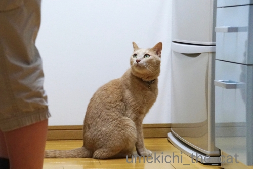
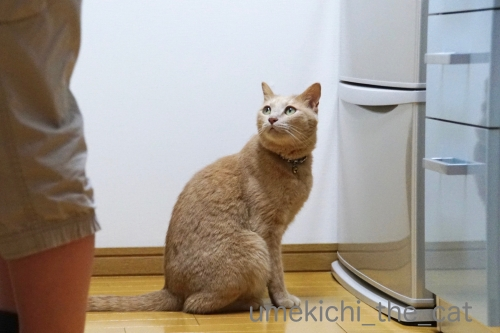

またハードルが一つ下がる [梅吉]
製氷庫をガサガサすると梅吉が飛んでくる季節になりました。
幼い頃からなぜかこの音が好き。
氷で遊ばせてきたわけでもないのに。
あまりにキラキラのお目目で見上げてくるのに負けて初めてバスタブで遊ばせたのは去年の話。
今年はキッチンの床が解放されましたよw
（32秒です＾＾）
こてつくんのように華麗にドリブルする事はなく、
獲物を仕留めるようなハンティングスタイルです(*>艸<)
バスタブで遊ばせようかなぁと思いましたが
キッチンの床がびしょ濡れになったら拭けばいいのよね・・・
と私の中でまた一つ「猫様の為ならハードル」が下がった2019年の夏。

冷蔵庫の前にいればまた何か楽しい事、美味しいことが起こるんじゃないか・・・
と期待しておかーさんを見つめる梅吉さんwww
動画の中に梅シロップが写ってますがこれで十日目くらいです。
あと一週間くらいで飲めそうです＾＾
ーーーーーーーーーー拡散希望ーーーーーーーーーーーー
ぽちの輔さんのところで目にした多頭飼い無責任放置の末の惨状。
直リンクを貼ろうかと思いましたがあまりにショッキングな内容のため止めました。
まずぽちの輔さんの記事を読んで次に発信元のマリエさんの記事と段階を踏んでください。
覚悟が出来たら大元の記事。
私は大元の記事の一枚目の写真を見てそれ以上進めなくなりました。
ひどすぎて言葉が見つかりません・・・
一匹でも多くの子がきちんとした飼い主さんの元で暮らせるよう願います。
これも現実。
もう一度気持ちを強く持って大元の記事はちゃんと読もうと思ってます。
 ↑ガブッと一押し↑
↑ガブッと一押し↑
阪急サン広場にあるポンガラカレーに行ってきました。
スリランカ系のカレーのお店です。
インド系カレーと何が違うのかと言うと・・・
スリランカの料理はココナツを多用する、海洋国なので魚介類を使うことが多い
と言われているようなのですが
詳しい事は調べてもちょっとよくわからない(⌒-⌒;
ごく一般の欧米人が和食、中華、韓国料理の違いを説明できないのと一緒かな。
興味がある方はこのあたりを見てね＾＾
で、ポンガラカレーの料理です。
これはおっとが食べたポンガラプレート。
お店の名前がついてるから看板メニューでしょうか。
私は写真を撮り忘れちゃってw
お店のHPから画像を借りてきました。
頼んだのはスリランカプレート。
カレーは合いがけ。最近このスタイルのカレーが多いですよね。
副菜は５種。ひよこ豆、ココナツを刻んだものはスパイスで味付けしてありました。
キャベツは甘酢漬けでカレー風味。
後の２種はメニュー写真と違ってインゲンをバター（ギー？）と唐辛子でピリ辛に味付けしたもの
もう一つが（メニューのはビーツ。おっとのプレートにはついてました）
干しエビを甘辛く煮付けてピリリと辛味を効かせたもの。
わが国でも小女子の佃煮ってありますよね。ズバリ、あれです、あれを辛くしたもの。
これらをまずはそれぞれに味わってから混ぜ混ぜしながら食べていきます。
渾然一体となったところ。
混ぜ進むうちにどんどん味に深みが出てきて美味しかったです。
干しエビの甘辛いの、ちょと味が立つんですがそれも慣れてきます。
小女子の佃煮を食べる日本人の口には合ってるのかも。
じわじわ辛いんですが口がピリピリするようなことはありません。
油分も少ないのであっさりと食べられてヘルシーな感じ。ファンになっちゃいました！！
数量限定でマトンのカレー、ハスの葉に包んだカレーもありました。
それも食べて見たいなぁ。
幼い頃からなぜかこの音が好き。
氷で遊ばせてきたわけでもないのに。
あまりにキラキラのお目目で見上げてくるのに負けて初めてバスタブで遊ばせたのは去年の話。
今年はキッチンの床が解放されましたよw
（32秒です＾＾）
こてつくんのように華麗にドリブルする事はなく、
獲物を仕留めるようなハンティングスタイルです(*>艸<)
バスタブで遊ばせようかなぁと思いましたが
キッチンの床がびしょ濡れになったら拭けばいいのよね・・・
と私の中でまた一つ「猫様の為ならハードル」が下がった2019年の夏。

冷蔵庫の前にいればまた何か楽しい事、美味しいことが起こるんじゃないか・・・
と期待しておかーさんを見つめる梅吉さんwww
動画の中に梅シロップが写ってますがこれで十日目くらいです。
あと一週間くらいで飲めそうです＾＾
ーーーーーーーーーー拡散希望ーーーーーーーーーーーー
ぽちの輔さんのところで目にした多頭飼い無責任放置の末の惨状。
直リンクを貼ろうかと思いましたがあまりにショッキングな内容のため止めました。
まずぽちの輔さんの記事を読んで次に発信元のマリエさんの記事と段階を踏んでください。
覚悟が出来たら大元の記事。
私は大元の記事の一枚目の写真を見てそれ以上進めなくなりました。
ひどすぎて言葉が見つかりません・・・
一匹でも多くの子がきちんとした飼い主さんの元で暮らせるよう願います。
これも現実。
もう一度気持ちを強く持って大元の記事はちゃんと読もうと思ってます。
阪急サン広場にあるポンガラカレーに行ってきました。
スリランカ系のカレーのお店です。
インド系カレーと何が違うのかと言うと・・・
スリランカの料理はココナツを多用する、海洋国なので魚介類を使うことが多い
と言われているようなのですが
詳しい事は調べてもちょっとよくわからない(⌒-⌒;
ごく一般の欧米人が和食、中華、韓国料理の違いを説明できないのと一緒かな。
興味がある方はこのあたりを見てね＾＾
で、ポンガラカレーの料理です。
これはおっとが食べたポンガラプレート。
お店の名前がついてるから看板メニューでしょうか。
私は写真を撮り忘れちゃってw
お店のHPから画像を借りてきました。
頼んだのはスリランカプレート。
カレーは合いがけ。最近このスタイルのカレーが多いですよね。
副菜は５種。ひよこ豆、ココナツを刻んだものはスパイスで味付けしてありました。
キャベツは甘酢漬けでカレー風味。
後の２種はメニュー写真と違ってインゲンをバター（ギー？）と唐辛子でピリ辛に味付けしたもの
もう一つが（メニューのはビーツ。おっとのプレートにはついてました）
干しエビを甘辛く煮付けてピリリと辛味を効かせたもの。
わが国でも小女子の佃煮ってありますよね。ズバリ、あれです、あれを辛くしたもの。
これらをまずはそれぞれに味わってから混ぜ混ぜしながら食べていきます。
渾然一体となったところ。
混ぜ進むうちにどんどん味に深みが出てきて美味しかったです。
干しエビの甘辛いの、ちょと味が立つんですがそれも慣れてきます。
小女子の佃煮を食べる日本人の口には合ってるのかも。
じわじわ辛いんですが口がピリピリするようなことはありません。
油分も少ないのであっさりと食べられてヘルシーな感じ。ファンになっちゃいました！！
数量限定でマトンのカレー、ハスの葉に包んだカレーもありました。
それも食べて見たいなぁ。

カフェオレ色の梅吉

梅吉 2023年8月10日 永眠


梅吉と出会った譲渡会

犬猫の理由なき殺処分ゼロ
妄想広告
UMEKICHI 光

爆発的に早い！
時々攻撃的！
Thanks to Mr.Boss365
爆発的に早い！
時々攻撃的！
Thanks to Mr.Boss365

濡れたら拭けばいいとは、さすがちぃさん広い心をお持ちです。
氷は滑り具合が面白いのでしょうかね。梅吉さんもっと出してと言ってるような気がする。
by zombiekong (2019-07-11 00:24)
氷に猫パンチする梅吉くん♪
このあとどうなったのか気になります～
夏はやっぱりカレーですよね(^_-)-☆
by yamatonosuke (2019-07-11 01:02)
氷で遊ぶとやっぱり冷たくて気持ちいいのかな～
夏のお遊びですね
by 藤並 香衣 (2019-07-11 01:10)
拡散に御協力いただき、ありがとうございます。
我が家も12匹居ますから、人事とも思えなくて。
梅吉さんはお掃除のお手伝いをしてくれてるのですね。
お母さんが床を拭き易いように氷で床を湿らせて＾＾
by ぽちの輔 (2019-07-11 06:51)
梅吉さん、無我夢中で楽しんでますね^^
by ニコニコファイト (2019-07-11 07:09)
梅吉さん！氷が冷たい？？？
冷蔵庫の前でちょこんと
座る姿が可愛いです(#^.^#)
ハードルが下がる（笑
分かります！
我が子が楽しければ・・・
危険じゃなければ・・・と
許容範囲が広がります(;^_^A
by きぃ (2019-07-11 07:38)
梅吉さん、超かわいい！
氷を少し引いて警戒していて、ちょいちょいとお手々出して、で、「冷てっ！」とでも言いそうに手をなめてるのがツボでした。
ツルツルとすべるから楽しいでしょうねー。
ハードル下がって梅吉さんに使えるちぃさん、さすがです！
そうそう、インドカレー、スリランカカレーなどなど、区別つかないです。以前一緒に仕事していた人はめちゃ詳しくて、どこそこのスリランカカレーは本格的だとか、どこそこはインドカレーと言っているけど違うとか、解説してくれました(^^;;
by ChatBleu (2019-07-11 07:48)
氷って基本、水やし、溶けたってベタつかないから
キッチンでも全然OKとちゃいますかー(^ ^)
カレーが、今、猛烈に食べたくなってきました！！
by よーちゃん (2019-07-11 08:44)
梅吉さん、氷を叩いた手をなめちゃっていますね！
冷たくて気持ち良いのでしょうか(^^)
by ma2ma2 (2019-07-11 09:34)
こんにちは。
梅吉くんの「ハンティングスタイル」勉強になります。
猫ハードルはドンドン下がって、猫様が頂点に君臨する日も遠くない感じ？
床磨きも兼ねて良いかもです。筋トレにもなります。
「梅シロップ」意外に中身量が少ない感じです。参考にさせて頂きます。
スリランカ系のカレー、食べた事ないかも？
トッピング？が旨味成分がある感じです。混ぜて複雑になる感じですね！？(=^･ｪ･^=)
多頭飼いの記事見ました。言葉を失う感じです・・・どうにかしたいですね。
by Boss365 (2019-07-11 11:40)
濡れたら拭けばいい・・下僕街道邁進中で何よりです(^▽^;)
我が家もハードルは下がりまくり。こてつが危険じゃなければ基本なんでもOKになっちゃいました^^
梅吉さんのチョイチョイ、かわいいですね♪
ウチのはドリブルタイプ。
一気にキッチンからリビングに躍り出てそのまま廊下へまっしぐら。
玄関の靴の中やソファの裏側などへ氷を叩き込んでしまうので、場外はファウルとして厳しく取り締まります。
飛び出た氷に私が先に追いつければ、ですが(≧▽≦)
スリランカカレー、どこをどう混ぜるかでいろんな味が楽しめるのが魅力ですね♪
by ゆきち (2019-07-11 12:15)
濡れたら拭く（ダイエットには床拭きが最高ですww）
お掃除が何回もできてピカピカになります（笑）
梅吉さん効果です。
梅吉さん、ハンティングスタイルで、
氷を触った手を舐めています。
冷たいのですね（笑）
by kiki (2019-07-11 12:47)
我が家にいたワンコも氷が好きでしたよ〜
あのガサガサが聞こえると ソファーから身を乗り出していました (^^)懐かしい想い出です
by チャー (2019-07-11 14:54)
氷遊びが好きなんだニャ（ﾟ□ﾟ）
でも、もう少し暑くなってからの方が気持ちいいかも？
てゆーか、氷が早く溶けちゃうか（ﾟ□ﾟ）
by 英ちゃん (2019-07-11 17:29)
梅吉さんの真剣な目が可愛いですね
by (。・_・。)２ｋ (2019-07-11 17:48)
むふふｗｗ
ハードルが下がりましたね^^
氷、我が家ではリビングまでコロコロ〜〜〜って来ております(笑)
本日、氷を大量につくってる最中^^
そろそろ氷出しコーヒーを作り始めようと思ってネ。
by リュカ (2019-07-11 18:16)
氷は冷たいので気持ちが良いんですね。
夏の訪れを感じます。
レイコーの季節です＾＾
by riverwalk (2019-07-11 22:14)
動いたときのコロコロする音がいいのかもしれませんね。
”床がびしょ濡れになったら拭けばいい”
・・・その通りですっ！！
床にゲ○されて、胃液で床のコーティングが剥げてしまうよりナンボかマシです。^^;
スリランカ系のカレー、ココナツを多用ですか。
これからの時期、ココナツ風味も良いですね。^^)
by yes_hama (2019-07-11 22:18)
おかーさんに対して次を求める表情がなんとも愛らしい！(^^;
その手のカレー、大好きです。
by 小松達也 (2019-07-12 17:48)
製氷庫の音で幼い頃から飛んでくるとは。
キラキラおめめで見上げられたら、ねえ‥＾＾
うちにはそういう子はいなかったけど。
ハードルが下がる！それはよくわかります～毎年なんか増えていく＾＾
スリランカのカレー、面白いですね。ご近所のインド料理屋さんのものとは確かに違ってます。カレーが丸い銀の器に入って皿の上に乗ってるのは同じだけど＾＾
小女子の佃煮が食べたくなってきた＾＾
by sana (2019-07-12 19:32)
期待を込めて見つめる梅吉君が切ないわ( ;∀;)
by palpal (2019-07-12 20:31)
梅吉さんのゆったりとした氷遊び和みますね(^^
うちはきっとNaoちゃんが激しくドリブルして追いかけそうな気がします。
氷に触れてプルプルっと手を振るのはやはり冷たっって感じるのでしょうかね。
梅シロップももうじき解禁ですね。
スリランカ式カレー、テレビで見ました♪
皿の周りに並んだ具材を混ぜながら食べていく様子はビジュアル的には
美しくありませんがとても美味しいですってレポートしていました(笑
ちょっと食べてみたいかも～～
by marimo (2019-07-14 10:59)
氷に反応しちゃうとは...かわいいですね❤
でも肉球冷え冷えになっちゃうのでは？と
ちょっと心配になりました＾＾
ふふ ちぃさんのシモベ度がどんどんUP
していますね(ΦωΦ)ふふふ
ボンガラカレー、行ったことはないけど知っています！
先日はその隣の隣、古潭に行っていました(笑)
まぜまぜ系なのですね♪そういうの最近流行っていますよね。
四天王寺にもおいしいところあるんですよぉ♪
『虹の仏』というところでけっこう人気です(*￣∇￣*)
by カトリーヌ (2019-07-16 13:49)
こんなカレーがあるんですねー。
食べてみたいーー♪
氷を触っておててブルブルってするのがかわいいニャー。
by liang (2019-07-17 20:53)